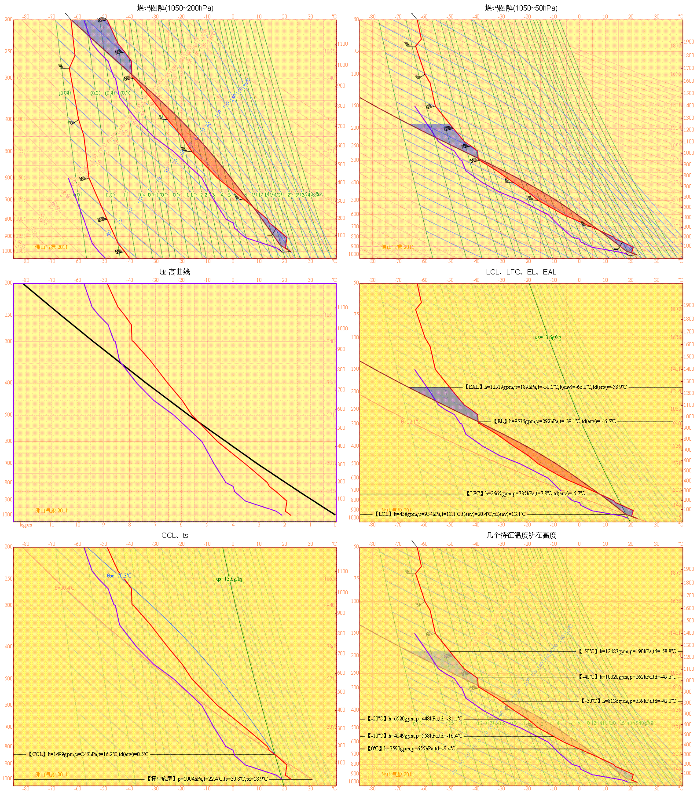

——旨在验算佛山气象试验版之T-lnP项目。样本取自《天气学分析》(第二版，寿绍文等编著.气象出版社.2008.p96)
制作：佛山市气象局 更新：2012-07 总用时： 更多标本：之二
| 埃玛图解(1050~200hPa) | 埃玛图解(1050~50hPa) |
| 压-高曲线 | LCL、LFC、EL、EAL |
| CCL、ts | 几个特征温度所在高度 |
您正在使用的浏览器不支持HTML5，仅显示截图。Your browser does not support HTML 5.
您必须使用支持HTML5的浏览器，如：Firefox、Safari、Opera、Chrome、 IE9+(非“兼容性视图”模式)等，才能看到真实计算的图解。
